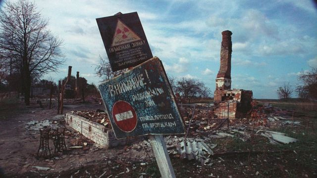

Sobre
Meu nome é Carolina, tenho 24 anos.
Formada Técnica em Fármacia no colégio Polígono e Técnica em Química na escola SENAI Mario Amato.
Atualmente estou cursando Química Industrial na Faculdade Oswaldo Cruz (FOC), com conclusão de termino em Dezembro de 2025.
Também estou realizando estágio na empresa Kation Raiden, produtora de lubrificantes industriais.
Faculdades Oswaldo Cruz (FOC)
Disciplina: Ciência, Tecnologia, Inovação e Sociedade - #CTIES
Professor: Paulo H. Lopes Aguiar
Atividade 2: X - O que é CTIeS ?
O papel da inovação
A inovação e criatividade são dois fatores fundamentais que estão sempre interligadas. A criatividade nada mais é que pensamentos associados a imaginação,
que está conectada diretamente a inovação pois juntas trabalham a necessidade de construir algo novo, sair da zona de conforto.
Cada vez mais as duas são exigidas rigorosamente, tanto no meio acadêmico quanto no meio profissional. No meio acadêmico, ultimamente instituições estão exigindo
de seus alunos mais comprometimento com suas atividades, no qual seria atividades mais complexas e teóricas, agora são atividades na qual os alunos colocam a” mão na massa”,
atividades propostas em grupos e em ambientes mais favoráveis. Um estudo conhecido como teste da Nasa, um teste feito a longo prazo com crianças de 5 anos até completarem
seus 15 anos, comprova que com o passar dos anos, as crianças tendem a serem menos criativas.
As crianças de cincos anos tendem a estarem mais livres de qualquer responsabilidade, estando descontraídos, um ambiente escolar mais alegre e mais contato social.
E com passar dos anos, ao adentrarem o ensino fundamental II tem assim um ambiente diferente, com mais disciplinas e ordens rigidas, tendo cobrança mais restrita,
e sendo assim diminuindo sua criatividade ou qualquer indicio de inovação.
No ramo profissional, empresas investem em como introduzir uma inovação e como facilitar o processo de adaptação dos indivíduos à mudança. Um fator fundamental é
o clima psicológico da organização para a geração de criatividade e geração de propostas inovadoras. Sendo elas: dar autonomia e liberdade para os funcionários inovar,
aceitação das diferenças e interesse pela diversidade, apoio da direção,
tolerar o fracasso e encorajar a experimentação e o risco.
O mercado de trabalho está procurando e precisando de pessoas capazes de resolver problemas, que tenham ações com potenciais de desenvolver essa habilidade da criatividade.
Tendo em vista a parte organizacional, cientificamente temos em vista dois tipos de problemas: os bem definidos (lineares) e os não definidos (complexos). Os bem definidos
são problemas lineares e sequenciais, no máximo gera uma melhoria incremental, quando você consegue resolver, são problemas que com metodos tradicionais são fáceis de resolver.
Já os problemas não definidos são problemas que necessitam de mais de uma área para resolver, ou empresas de foras. Geralmente uma equipe interdisciplinar que conseguem resolver e
geram resultados, usando a inovação chamada inovação supletiva, na qual ela rompe com o que se tinha anteriormente; algo novo.
Faculdades Oswaldo Cruz (FOC)
Disciplina: Ciência, Tecnologia, Inovação e Sociedade - #CTIES
Professor: Paulo H. Lopes Aguiar
Atividade 3: Coletar 3 imagens de tragedia provocadas pelo homem
Um vazamento em torno de 1,3 milhões de óleo na Baía de Guanabara no Rio de Janeiro, em 18 de Janeiro de 2000.
A tragédia ocorreu por não ser seguido á risca o projeto dos dutos, descumprindo o modelo correto de seu funcionamento. Seu acontecimento poderia ter sido evitado com uma vigilância dura sobre seguir corretamente os processos de implementação dos dutos, assim também como seu funcionamento.
Assim como um conscientizar a sociedade como um desastre em nível grande, pode interferir não só no presente como no futuro. São danos como esses que levam anos para serem reparados.

Acidente nuclear, em 26 de abril de 1986.
Ocorreu na usina nuclear, por diversos operadores do reator 4 descumprirem diversos itens dos protocolos de segurança. Em um teste de rotina, para determinar quanto tempo as turbinas ficavam girando após uma queda de energia, o operador cometeu alguns erros, como a desativação do mecanismo de desligamento automático do reator e o desligamento das bombas de agua que o refrigeravam.
Quando o operador percebeu, já era tarde demais.
Onde entra a importância de seguir corretamente as medidas previstas nos protocolos de segurança, e ter a consciência de como é importante que seguindo essas medidas, faz assim a prevenção de imprevisto futuros sendo eles pequenos ou não.
Seguindo os protocolos de segurança rigidamente teria sido evitado uma tragedia dessa.
Em 6 de dezembro de 1917, dois navios colidiram destruindo a cidade de Halifax no norte do Canadá.
Por ser tempos antigos, os meios de comunicações eram ruins. As informações naquela época eram passadas por meios de apitos, sendo passadas para outras embarcações por apitos longos ou curtos. Entre as navegações, os comandantes do Imo e do Mont Blanc, onde um sinalizava que ia por um lado do canal e outro alertava que já estava naquela posição.
No momento que o Imo começou seu movimento de dar ré, gerou fagulhas que deram inicio a um incêndio no Mont Blanc, dado que ele carregava toneladas de munições altamente explosivas (200 toneladas de TNT, 2300 toneladas de ácido pícrico, 35 toneladas de gasolina alta octanagem).
Quinze minutos depois, o Mont Blanc desintegrou pelos ares, explodindo e destruindo grande parte da cidade.
Por meio de comunicação, eles poderiam ter evitado, com os capitoes dos portos terem ordenados que outras embarcações mantivessem suas posições até que o Mont Blanc, cheio de munições, fizesse uma passagem segura pelo porto.
Faculdades Oswaldo Cruz (FOC)
Disciplina: Ciência, Tecnologia, Inovação e Sociedade - #CTIES
Professor: Paulo H. Lopes Aguiar
Atividade 4: Evolução humana.
EVOLUÇÃO HUMANA
A evolução humana se dá como ao processo de mudanças que originou os seres humanos e os diferenciou como espécies.
O ser humano tem como antepassado em comum aos macacos antropoides, devido as suas grandes semelhanças. Um grupo a milhares de anos atrás sendo dividido em duas partes, um habitando a floresta tropical no qual foi originados os chimpanzés e o segundo grupo vivendo em ambientes mais fechados os Homos sapiens.
Dentro dessas espécies, podemos classifica-los em diferentes grupos:
- Australopithecus: são espécies parecidas com os chimpanzés, porem são bípades (andam sobre dois pés), andavam em posturas eretas e possuíam pequeno porte.
- Homo Habilis : uma das espécies mais antigas do mundo, suas características são dadas por serem os primeiros a construir ferramentas de pedras e ossos de animais. Suas características eram similares aos Australopithecus, porem com pescoço, mandíbula e dentes menores.
- Homo Erectus: possuíam um cérebro mais desenvolvido, viviam em grupos e utilizavam o fogo para cozinhar alimentos. Desenvolveram ferramentas mais elaboradas. Eram onívoros, se alimentavam de carnes e vegetais.
- Neanderthalensis: espécie que viveu na pré Historia, possuíam o corpo adaptados ao frio, se alimentavam principalmente de carne vermelha, por irem a caça. Moravam em cavernas e fabricavam ferramentas e armas de caça com pedras, além de confeccionarem roupas.
- Homo Sapiens: denominação cientifica de homem moderno. Uma espécie com o cérebro mais desenvolvido, com a capacidade de raciocínio e comunicação.
- Cro Magnon : espécie com raciocínio abstrato,com músculos fortes e grandes. Ferramentas bem mais elaboradas e o surgimento de pequenas esculturas e pinturas em pedras. Utilizavam o fogo para cozinhar seus alimentos.
Sendo responsáveis pela arte rupestre. Primeira forma de comunicação artística era feitas em paredes e estruturas rochosas, desenhando suas crenças, representação de animais, possíveis calendários astronômicos e símbolos.
Podendo concluir que os humanos continuam a evoluir, sendo uma evolução voltada a parte tecnológica e biológica. Com avanços nas áreas da ciência aumentando as qualidades de vida, tendo possíveis soluções de problemas rápidos.
Surgimento com o tempo de aparelhos eletrodomésticos, carros e celulares.
Faculdades Oswaldo Cruz (FOC)
Disciplina: Ciência, Tecnologia, Inovação e Sociedade - #CTIES
Professor: Paulo H. Lopes Aguiar
Atividade 6 : Mapa mental com exemplos
de tecnologias na área da saúde
Faculdades Oswaldo Cruz (FOC)
Disciplina: Ciência, Tecnologia, Inovação e Sociedade - #CTIES
Professor: Paulo H. Lopes Aguiar
Atividade 7: resenha sobre o video
Resenha
Jane McGonigal foca no objetivo de tornar na realidade o que conseguimos fazer nos jogos. O sentimento em si de nos tornamos mais corajosos, empolgados em seguir em frente até vencermos. Por que é tao difícil sermos os mesmo que somos nos jogos? Na vida humana, qualquer obstaculo ou erros que cometemos nos desmotiva a seguirmos em frente enquanto no jogo, isso nos encoraja a continuarmos.
Um dos motivos é que nos jogos estão sempre disponíveis para nós, personagens para nos ajudar a conquistar aquilo que precisamos naquela fase, enquanto na vida real muitas vezes estamos sozinhos lutando por algo.
Mas Jane acredita que os jogos em si influenciam em algo sendo o que os jogadores acreditam e separa elas em 4 coisas.
A primeira é otimismo urgente, o desejo de agir imediatamente sendo como uma automotivação extrema, para vencer um obstaculo. Como uma crença de que temos qualquer chance de alcança o sucesso. Acreditando sempre que é possível vencer e passar aquela fase, basta apenas tentar e tentar.
A segunda é que os jogos tendem a criar uma vida social mais estreita, que mesmo as pessoas nos vencendo ou não tendemos a gostar dela apenas pelo fato dela jogar e compartilhar aquele jogo conosco. Construindo assim uma relação mais confiante e mais forte.
A terceira é a produtividade prazerosa, que mesmo jogando por horas os jogadores se sentem mais felizes trabalhando duro naquele momento do que relaxando em algum outro lugar, desde que seja dado o trabalho correto.
A quarta é o significado épico, onde os jogadores se dedicam a vencer desafios importantes.
Construindo assim uma ideia de que eles passam mais tempos realizando coisas onlines, do que na vida real.
Com seus estudos, Jane McGonigal vem estudando todos os anos como deveríamos nos relacionar com o futuro, não prevendo-o mas fazendo ele. Querendo assim dar força as pessoas para fazer o possível para as coisas darem um resultado na realidade, um significado para alcançar essa vitoria. Construindo 3 jogos para tentar dar significado as pessoas de tornar vitoriosos sobre seu futuro. Mundo sem Petróleo, um jogo no qual você tem que sobreviver sem o petróleo. Mostrando no jogo uma vida real sem petróleo, o tanto que isso afeta para você imaginar sua vida real sem ele.
Assim com o jogo, você mantêm seus hábitos tanto online quanto real para melhorar a vida.
O segundo jogo é um computador que mostra que tem apenas 23 anos de vida para os seres humanos, no qual os jogadores tem que inventar o futuro da energia, da comida , da saúde, inovando em coisas novas para ter um futuro melhor. Incentivando assim a criatividade e inovação para o futuro.
O ultimo jogo convida eles a aprenderem sobre inovação social, ao subir de níveis aprendem técnicas de percepção local, conhecimento de redes, sustentabilidade, visão e sabedoria.